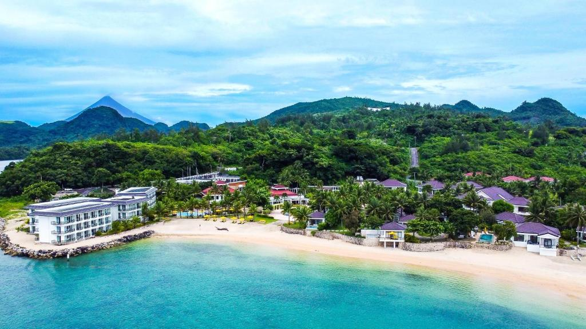
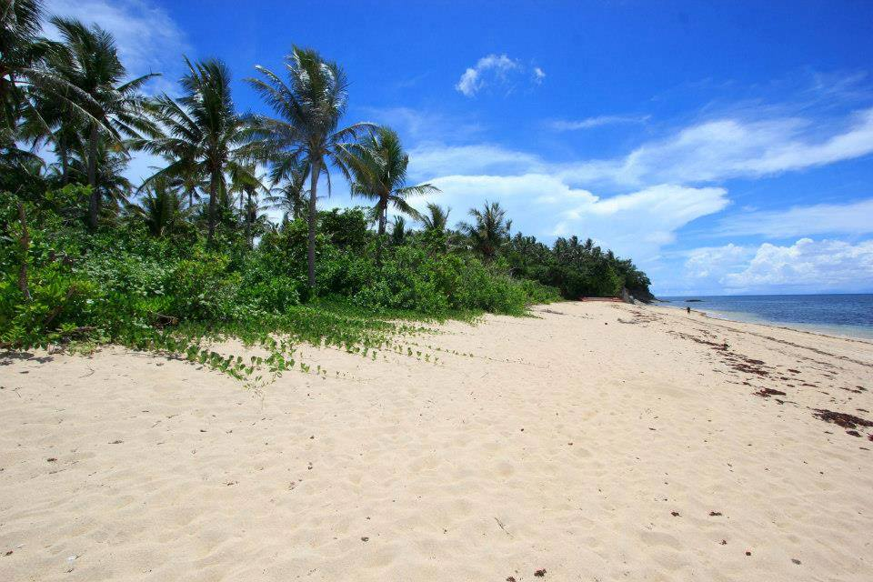
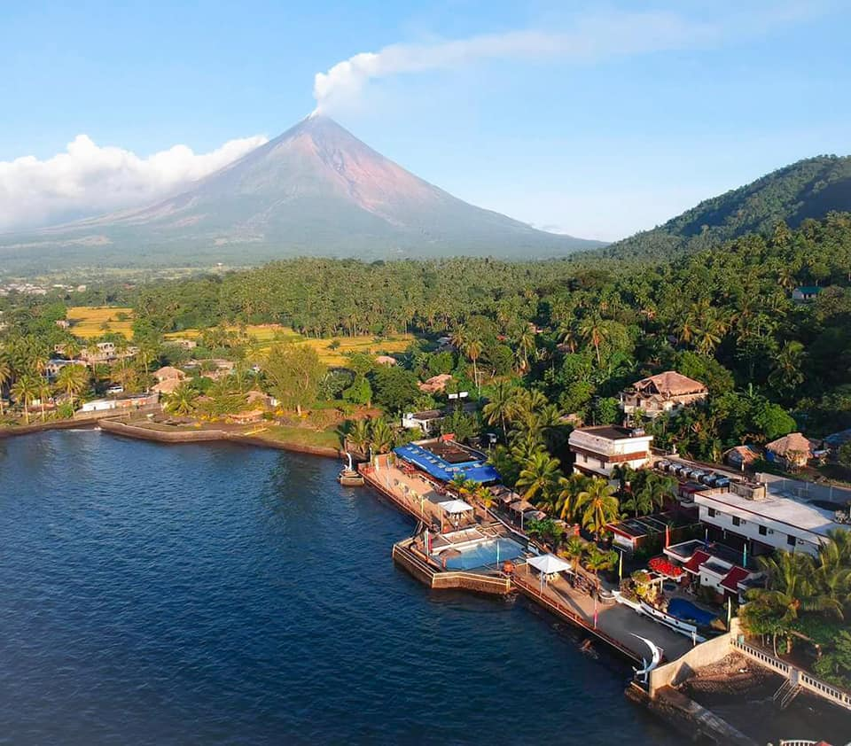

Explore the relaxing shores, scenic coastlines, and peaceful beach destinations that make Albay a refreshing place to visit.
Beach tourism in Albay offers visitors a chance to enjoy nature, fresh sea air, and calm coastal views. Aside from the province’s famous volcano and cultural sites, Albay also has beaches where travelers can relax, take pictures, enjoy local food, and spend quality time with family and friends.

Misibis Bay is one of the most famous beach destinations in Albay, known for its relaxing atmosphere and beautiful coastal views.

Bacacay offers quiet beaches perfect for visitors who want a peaceful and less crowded experience.

Sabang Beach is known for its dark volcanic sand and calm, relaxing environment.

This beach offers scenic coastal views and a relaxing place for family outings and sightseeing.
Visitors can enjoy swimming, taking photos, walking along the shore, watching the sunset, and relaxing by the sea. You can also explore nearby coastal areas, enjoy picnics with family and friends, and experience the peaceful environment of the beach. Some areas are also perfect for short trips, sightseeing, and simply enjoying the fresh air and natural scenery.
Bring comfortable clothes, sunscreen, and enough water to stay hydrated. It is best to visit during good weather so you can fully enjoy the beach. Always keep the surroundings clean by throwing your trash properly. Be mindful of safety, especially when swimming, and follow local guidelines. It is also helpful to plan your trip ahead and check the location before visiting.